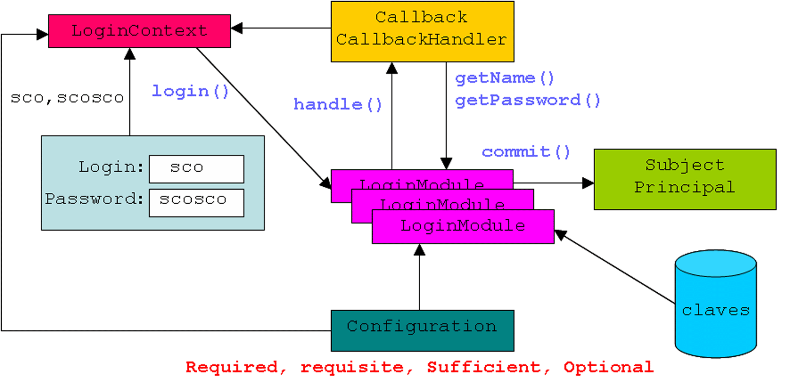
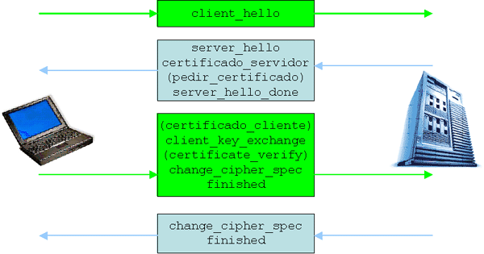

Autentificación-Autorización(JAAS) y Comunicación Segura (SSL)
Integrando Autentificación y Autorización
JAAS: Java Authentication and Authorization Service
Este API está orientado a conceder permisos en función de quién ejecuta el código. Se basa en PAMs (Pluggable Authentication Modules) que proporcionan mecanismos de autentificación. El mecanismo por defecto es el de usuario-password: cuando un usuario ejecuta código que require privilegios se pide el nombre de usuario y el password, y si éstos son correctos se conceden los permisos. Así, JAAS abarca tanto la autentificación, o verificación de identidad del usuario, como la autorización, es decir la concesión de permisos de acceso a los recursos. Como veremos más adelante, este es el modelo implementado por BEA WebLogic. El esquema general se muestra en la imagen siguiente:

javax.security.auth.login: LoginContext y Configuration
Supongamos que desde el código de una aplicación (p.e. EjemploJAAS.java) se intenta autentificar a un usuario a través de su nombre y password. El primer paso es crear lo que se denomina un contexto de Login o LoginContext al que pasamos un nombre (p.e. "Ejemplo") seguido de un manejador llamado UserPasswordCallbackHandler que parametrizado por el nombre de usuario y su password:
// 1. LoginContext
String usuario = args[0];
char[] password = args[1].toCharArray();
LoginContext loginContext = new LoginContext(
"Ejemplo", new UserPasswordCallbackHandler(usuario, password));
Para que la autentificación funcione, debemos tener especificado que al contexto Ejemplo se le asocia un determinado módulo de login o LoginModule con una determinada configuración. Por ello, la clase abstracta Configuration define como deben usarse LoginContext y LoginModule. Más concretamente, determina que módulos de login deben ser invocados y cómo su éxito o fracaso afecta al proceso de login. Se establecen cuatro posibilidades:
| Required | El módulo de login debe tener éxito para que el login completo tenga éxito. Incluso si falla, se consulta a otros módulos de login. |
| Requisite | El módulo de login debe tener éxito para que el login completo tenga éxito. Si falla, el proceso de login es corto-circuitado y no se llama a ningún otro módulo de login. |
| Sufficient | Si este módulo tiene éxito y ningún módulo requerido o de requisito falla, el login completo tiene éxito. |
| Optional | El éxito de este módulo no influye en el resto del proceso. Si ningún módulo de los tres tipos anteriores falla, el login completo tiene éxito independientemente de que un módulo opcional tenga éxito. |
La asociación del contexto Ejemplo a un determinado módulo de login, llamado PasswordLoginModule, con la configuración required pueden alojarse, p.e., en el fichero jaas.config:
Ejemplo {
PasswordLoginModule required;
};
javax.security.auth.callback: Callback y CallbackHandler
El código del manejador se encuentra en UserPasswordCallbackHandler.java. Dicho código implementa la interfaz CallbackHander. Para ello hay que definir un constructor, que simplemente recibirá el nombre de usuario y el password que se le pasa por parámetro desde el código que inició la autentificación:
public UserPasswordCallbackHandler(String usuario, char[] password) {
mUsuario = usuario;
mPassword = password;
}
A continuación hay que implementar el método handle() que recibe como entrada un array de objetos Callback. Sun proporciona diversas implementaciones como PasswordCallback y NameCallback con métodos como setName() y setPassword() que inicializan el nombre y password del usuario en los respectivos callbacks a los valores definidos por el constructor y que en su momento le pasó la aplicación que realiza la autentificación:
public void handle(Callback[] callbacks)
throws UnsupportedCallbackException {
// Iterar los callbacks
for(int i=0;i<callbacks.length;i++) {
Callback callback = callbacks[i];
// Manejar callback según su tipo.
if (callback instanceof NameCallback) {
NameCallback nameCallback = (NameCallback)callback;
nameCallback.setName(mUsuario);
} else if (callback instanceof PasswordCallback) {
PasswordCallback passwordCallback = (PasswordCallback)callback;
passwordCallback.setPassword(mPassword);
} else {
throw new UnsupportedCallbackException(callback, "Tipo de callback no soportado");
}
}
}
Interfaz javax.security.auth.spi.LoginModule
Volviendo a la aplicación EjemploJAAS.java, entra en juego la interfaz LoginModule que se encuentra implementada en el código PasswordLoginModule.java. En esta interfaz tenemos los siguientes métodos:
| initialize() | Dado un objeto inicializa el LoginModule para un intento de login. |
| login() | Comprueba las credenciales del sujeto anterior. Esto es dependiente de la implementación: Puede consistir en un acceso a BD, leer un fichero de passwords, etc. |
| commit() | Se invoca solo si login() tiene éxito. Este método añade las identidades y credenciales necesarias para el sujeto. El módulo login debe limpiar su estado durante el commit. Una vez que el commit tenga éxito, JAAS añadira el sujeto al contexto actual. |
| abort() | Si el login() falló, se invoca este método y se limpia el estado del login. |
| logout() | Hace logout borrando las identidades y credenciales que sea necesario. |
Desde la aplicación llamaremos a login() de la siguiente forma:
// 2. login() logincontext.login();
Concretamente el método login() define el array de callbacks y llama al método handle() del manejador para darle valor al nombre de usuario y al password. A continuación se accede a los callbacks devueltos mediante los métodos getName() y getPassword(). Estos valores son los que en su momento se pasarón desde la aplicación que realiza la autentificación.
// Crear dos callbacks: uno para usuario y el otro para password.
Callback[] callbacks = new Callback[2];
callbacks[0] = new NameCallback("Usuario");
callbacks[1] = new PasswordCallback("Password", false);
try {
// Llamar al callbackhandler para rellenar informacion
mCallbackHandler.handle(callbacks);
mUsuario = ((NameCallback)callbacks[0]).getName();
char[] tempPassword = ((PasswordCallback)callbacks[1]).getPassword();
mPassword = new char[tempPassword.length];
System.arraycopy(tempPassword, 0, mPassword, 0, tempPassword.length);
// Borrar password en el callback
((PasswordCallback)callbacks[1]).clearPassword();
} catch (IOException ioe) {
throw new LoginException(ioe.toString());
} catch (UnsupportedCallbackException uce) {
throw new LoginException(uce.toString());
}
A continuación se borra el password llamando al método clearPassword() y se produce la validación del nombre de usuario y del password. Asumiendo que el usuario es sco y el password es scosco, el código de validación podría ser el siguiente:
// Validar usuario y password
if (
"sco".equals(mUsuario) &&
mPassword.length == 6 &&
mPassword[0] == 's' &&
mPassword[1] == 'c' &&
mPassword[2] == 'o' &&
mPassword[3] == 's' &&
mPassword[4] == 'c' &&
mPassword[5] == 'o'
) {
// Usuario y password son correctos
mLoginExito = true;
return true;
} else {
// Fallo de autentificación. Borrar estado y lanzar excepción
mLoginExito = false;
mUsuario = null;
clearPassword();
throw new FailedLoginException("Password Incorrecto");
}
de tal manera que si se detecta un fallo de autentificación se borra el password y se lanza una excepción. Esto hace que JAAS automáticamente lance el abort() que a su vez puede desencadenar un logout().Si por el contrario todo va bien, JAAS ejecutará el método commit(). Este método va a crear un objeto de la clase Subject.
Clase javax.security.auth.Subject
Un Subject es una entidad (persona o empresa) o sujeto que está utilizando el sistema. Una entidad puede poseer una o más identidades o instancias de java.security.Principal. Por ejemplo podemos tener dos logins (identidades) cada uno de los cuales está asociado a una aplicación distinta. Para obtener un Set con todas las identidades llamaremos al método getPrincipals().
Una sujeto contiene una lista de credenciales o instancias de Credentials, objetos tales como passwords y certificados, que pueden ser públicos o privados y puede accederse a ellos con los métodos getPublicCredentials() y getPrivateCredentials() respectivamente.
Los sujetos representan quién está ejecutando el código y por lo tanto el acceso a determinados recursos depende de quién es la entidad activa. Para obtener dicha entidad llamaremos a getSubject(). JAAS se encarga, en coordinación con la interfaz LoginModule, de asignar entidades. Concretamente, en el método commit() del LoginModule de nuestro ejemplo, se crea un Principal llamando a la implementación de esta interfaz que se encuentra en el código ImplPrincipal.java. A continuación a dicho principal se le añade el nombre de usuario, y el principal se añade al sujeto.
public boolean commit() throws LoginException {
if (mLoginExito == false) {
return false;
}
// Login con éxito: crear Principal y añadirlo al Subject
mPrincipal = new ImplPrincipal(mUsuario);
if (!(mSujeto.getPrincipals().contains(mPrincipal))) {
mSujeto.getPrincipals().add(mPrincipal);
}
// Si queremos que el Subject contenga credenciales
// este es el momento para añadirlas.
// Borrar usuario y password.
mUsuario = null;
clearPassword();
mCommitExito = true;
return true;
}
Una vez realizado el commit(), desde la aplicación leeremos el contexto y lo imprimiremos:
// 3. getSubject() e imprimir Subject subject = loginContext.getSubject(); System.out.println(subject);
Probando el ejemplo
Para ilustrar el funcionamiento de las clases e interfaces anteriores necesitamos compilar los *.java: la aplicación EjemploJAAS.java, el manejador UserPasswordCallbakHandler.java, el módulo de login PasswordLoginModule.java, y el principal ImplPrincipal.java, y debe estar en el mismo directorio el fichero de configuración jaas.config.
A continuación llamaremos a la aplicación haciendo que la máquina virtual de java tome como fichero de configuración el fichero jaas.config. Si ponemos el nombre de usuario y el password correcto
java -Djava.security.auth.login.config=jaas.config EjemploJAAS sco scosco
el resultado será mostrar el nombre de usuario del sujeto autentificado. Si por el contrario se suministra un nombre de usuario o un password incorrectos el login fallará al dispararse una excepción.
Autorización programática
En ocasiones es conveniente determinar si quien está ejecutando un determinado código está autorizado para ello. Supongamos que desde el main() de la aplicación EjemploJAAS2.java definimos un contexto de login para el usuario sco con password scosco. Supongamos que, independientemente de que el login tenga éxito o fracase intentamos ejecutar un determinado fragmento de código. Para ello extraemos el sujeto del login y llamamos al método doAs()de la clase Subject:
sujeto.doAs(sujeto, new AccionEjemplo());
donde AccionEjemplo es una clase que implementa la interfaz java.security.PrivilegedAction. Esta interfaz contiene únicamente el método run(). Supongamos que al ejecutarlo llamamos al método getSecretText() definido en la aplicación:
class AccionEjemplo implements PrivilegedAction {
public AccionEjemplo() {}
public Object run() {
System.out.println("Texto secreto: " + EjemploJAAS2.getSecretText());
return null;
}
}
Hasta el momento hemos permitido el acceso independientemente de que el login haya tenido o no éxito. Sin embargo getSecretText() está diseñado para producir una salida distinta según el caso. ¿Cómo nos enteramos de si el usuario realmente está autorizado o no, y en función de ello emitimos una salida u otra? Necesitamos definir una instancia de la clase java.security.AccessControlContext, que obtendremos mediante llamando al método getContext() de la clase java.security.AccessController y una ver obtenida pasársela como argumento al método getSubject() de la clase Subject:
AccessControlContext contexto = AccessController.getContext(); Subject sujeto = Subject.getSubject(contexto);
Si el sujeto obtenido es null entonces está claro que se trata de un acceso incorrecto, y en ese caso se emite el texto esto lo puede ver cualquiera. En caso contrario se obtienen todas sus identidades o principales (principals). Si una de esas identidades corresponde al usuario sco entonces se emite el texto solo para tus ojos.
if (sujeto == null) {
System.out.println("Sujeto null");
return TEXTO_GENERICO;
}
// Obtener todos los principales: instancias de ImplPrincipal.
// Devolver el texto secreto si el usuario "sco"
Set principales = sujeto.getPrincipals();
Iterator iterador = principales.iterator();
while (iterador.hasNext()) {
ImplPrincipal principal = (ImplPrincipal)iterador.next();
if (principal.getName().equals("sco")) {
return TEXTO_PARTICULAR;
}
}
return TEXTO_GENERICO;
Certificados y SSL
SSL Básico: Funcionamiento y HTTPS
SSL es el protocolo habitualmente usado para encriptar la comunicación cliente-servidor. Casi todo el tráfico en la red puede encriptarse con SSL: POP, IMAP, telnet, FTP, etc, pero es especialmente interesante para dotar de seguridad al protocolo HTTP, es decir como base del HTTPS.
La implementación de SSL es una extensión de los sockets que permite establecer un canal (stream)de comunicación. Dicha comunicación se inicia con un handshake durante el cual, el cliente y el servidor construyen una session-key (clave simétrica encriptada con un esquema asimétrico) compartida para verificar su identidad mútua:
1.Cliente envía un mensaje client_hello que contiene: versiones SSL soportadas por el cliente, 32 bytes aleatorios que crea el cliente, ID de sesión, lista de cifradores soporados, lista de métodos de compresión sopordados.
2. Servidor responde con server_hello: selección de las versiones SSL de la lista del cliente, 32 bytes aleatorios creados por el servidor, ID de sesión, cifradores escogidos de la lista del cliente (p.e. RSA y RC4) y método de compresión usado (usualmente ninguno).
A continuación, el servidor envía su certificado X.509 firmado por una CA y que contiene la clave pública del servidor (así el cliente puede enviarle mensajes cifrados con ella, de manera que solo quien posea la clave privada puede descrifrarlos). Seguidamente el servidor puede pedir un certificado al cliente pero usualmente al cliente se le considera anónimo. Después el servidor envía un server_hello_done y queda a la espera.
3. Cliente verifica el mensaje del servidor y si se le requiere un certificado se lo envía. Seguidamente envía un client_key_exchange con 48 bytes (sacados de los 32 del cliente y de los 32 del servidor) que se usan para construir la session-key que a su vez es encriptada con la clave pública del certificado del servidor.
A continuación, si al cliente se le pidió un certificado, éste envía un certificate_verify. En cualquier caso, después el cliente construye una clave simétrica con RC4 y una clave para el MAC que se usará para comprobar la integridad de los datos. Después envía un change_cipher_spec para indicar los parámetros de cifrado y seguidamente un finished.
4. Servidor responde con su propio change_cipher_spec y su propio finished.
A partir de este punto, la comunicación cliente-servidor será encriptada por clave simétrica, lo cual es transparente para las librerías Java SSL como JSSE (Java Secure Sockets Extension).

JSSE es un API para usar SSL en Java. Se incluye a partir de J2sdk1.4 de tal forma que el fichero $JAVA_HOME/jre/lib/security/java.security contendrá una línea similar a esta:
security.provider.x=com.sun.net.ssl.internal.ssl.Provider
Cliente y servidor HTTPS
Para ejecutar un cliente HTTPS que acceda a una determinada URL que se le pasa desde la línea de comandos (ver ClienteHTTPS.java) hay que indicarle al manejador de URLs dónde están las clases HTTPS:
java -Djava.protocol.handler.pkgs=com.sun.net.ssl.internal.www.protocol ClienteHTTPS https://www.thawte.com/
Altnerativamente el manejador puede configurarse usando el método setProperty():
System.setProperty( "java.protocol.handler.pkgs", "com.sun.net.ssl.internal.www.protocol");
En cuanto al servidor (ver ServidorHTTPS.java), lo primero es crear un socket SSL. Para ello utlizamos el método getDefault() de la clase javax.net.ssl.SSLServerSocketFactory para obtener una SSLServerSocketFactory, y luego llamaremos al método createServerSocket de esta clase para crear un ServerSocket:
SSLServerSocketFactory ssf =
(SSLServerSocketFactory)SSLServerSocketFactory.getDefault();
ServerSocket ss = ssf.createServerSocket(8080);
y este socket puede usarse como un socket estándard. Así, a partir de aquí no hay ninguna referencia a SSL y el servidor trabaja de forma transparente. Con un accept() espera llamadas desde un cliente, define un InputStream para leer la entrada del cliente y un OutputStream para escribirla en la pantalla. Después construye una página HTML, y finalmente cierra los streams y el socket.
Sin embargo, si intentamos ejecutar este ejemplo con java ServidorHTTPS, se lanza una excepción al detectarse que no se ha creado un certificado y una clave privada para el servidor SSL. Para ello, llamaremos a keytool desde el directorio desde donde ejecutamos el servidor:
keytool -genkey -v -keyalg RSA -keystore .keystore
y ponemos como nombre el nombre de la máquina, p.e. localhost. Así, para lanzar el servidor HTTPS indicaremos a la máquina virtual el almancén que contiene el certificado y el password para acceder a él. Desde línea de comandos esto queda como:
java -Djavax.net.ssl.keyStore=.keystore -Djavax.net.ssl.keyStorePassword=scosco ServidorHTTPS
Tras esperar unos segundos para dejar que el servidor se inicialice, pediremos desde el navegador la URL https://localhost:8080 atacando al puerto donde está escuchando el servidor. Sin embargo, dado que el certificado que hemos utilizado es auto-firmado, el navegador no lo reconocerá aunque nos pedirá si queremos aceptarlo. Si decimos que sí, se muestra una página web con el mensaje Hola!.
Para salvar las advertencias del navegador hemos de conseguir un certificado firmado por una CA reconocida, como Verisign.
Cuando un cliente ataca un servidor SSL, el servidor envía un certificado al cliente para verificar que el cliente conoce la identidad del servidor. El cliente entonces valida el certificado y confía en la CA que lo firmó. Como el certificado de nuestro servidor es auto-firmado hemos de decirle al cliente que nos acepte como CA. Desde línea de comando haremos lo siguiente:
java -Djavax.net.ssl.trustStore=.keystore ClienteHTTPS https://localhost:8080/
y el resultado será el código HTML de la página web que sirve el servidor HTTPS.
Hay que tener en cuenta que el trustStore por defecto es el fichero $JRE_HOME/lib/security/cacerts que contiene todos los certificados en los que Java confía, aunque podemos importar otros desde keytool.
Autentificación del cliente
Como hemos visto, en HTTPS solamente se autentifica el servidor presentando un certificado digital, mientras que el cliente se considera anómino. Si queremos que, para más seguridad, también el cliente se autentifique ante el servidor, éste deberá presenstar un certificado digital.
Para forzar que el cliente se autentifique modificaremos el código del servidor ServidorHTTPS.java de manera que incluya las líneas
// Utilizar una SocketFactory para crear sockets SSL: SSLServerSocketFactory ssf = (SSLServerSocketFactory)SSLServerSocketFactory.getDefault(); SSLServerSocket ss = (SSLServerSocket)ssf.createServerSocket(8080); // Requerir autentificación del cliente ss.setNeedClientAuth(true);
Es decir, que utilice sockets de la clase SSLServerSocket para llamar al método setNeedClientAuth() de dicha clase. El resultado es el código ServidorHTTPSAutorizando.java. Así, el cliente ClienteHTTPS.java podrá conectarse a este servidor para que le muestre una página web. Pero antes, la autorización mútua fuerza a que el cliente incorpore en su trustStore un certificado del servidor y éste incorpore en el suyo un certificado del cliente. Veámoslo paso a paso:
| 1. Keystore del cliente | keytool -genkey -v -keyalg RSA -keystore ks_cliente con "CN=sco" y clave "scosco" |
| 2. Keystore del servidor | keytool -genkey -v -keyalg RSA -keystore ks_servidor con "CN=localhost" y clave "dcciadccia" |
| 3. Certificado del servidor | keytool -export -v -file servidor.cer -keystore ks_servidor |
| 4. Truststore del cliente | keytool -import -v -alias certservidor -file servidor.cer -keystore ts_cliente con clave "scosco" reconociendo que confiamos en el certificado |
| 5. Certificado del cliente | keytool -export -v -file cliente.cer -keystore ks_cliente |
| 6. Truststore del servidor | keytool -import -v -alias certcliente -file cliente.cer -keystore ts_servidor con clave "dcciadccia" respondiendo que confiamos en el certificado |
Así, lanzaremos el servidor de la siguiente forma
java -S.keyStore=ks_servidor -S.keyStorePassword=dcciadccia -S.trustStore=ts_servidor ServidorHTTPSAutorizando
donde hay que sustituir S por Djavax.net.ssl al escribir el comando. De la misma manera, en otra ventana lanzaremos el cliente:
java -S.keyStore=ks_cliente -S.keyStorePassword=scosco -S.trustStore=ts_cliente ClienteHTTPS https://localhost:8080
donde de nuevo hay que sustituir S por su valor al escribir el comando. El resultado es que el cliente puede acceder a la pagina web.
Siguiendo con el esquema otra posibilidad es que autentifiquemos al cliente no en base a un certificado completo sino a ciertos datos contenidos en el certificado, como por ejemplo el CN del mismo. Para ello, dentro del servidor hemos de incluir, tras el accept(), el siguiente fragmento de codigo
boolean permitido = false;
// Obtener la sesion
SSLSession sesion = ((SSLSocket) s).getSession();
// Comprobar la autentificación del cliente con el AutentificadorCN
AutentificadorCN autentificador = new AutentificadorCN(sesion);
try {
autentificador.comprobarPermiso();
permitido = true;
} catch (ExcepcionAutentificacion ea) {
permitido = false;
System.out.println("Acceso denegado." + ea);
}
resultando el código ServidorHTTPSAutorizando2.java. En definitiva, lo que hace el servidor es acceder a la SSLSession para obtener la sesión del socket y usarla para crear un objeto de la clase AutentificadorCN que implementa la inferfaz AutentificadorSSL. El único método de dicha interfaz es comprobarPermiso() (ver AutentificadorCN.java) y básicamente hace lo siguiente:
// 1. Obtener la secuencia de certificados.
X509Certificate[] certChain = null;
try {
certChain = mSession.getPeerCertificateChain();
} catch (SSLPeerUnverifiedException spue) {
// No hay!
throw new ExcepcionAutentificacion("Error cadena");
}
// 2. Obtener el certificado del cliente
X509Certificate clientCert = certChain[0];
// 3. Obtener el principal correspondiente al cliente
java.security.Principal client = clientCert.getSubjectDN();
// 4. Obtener el nombre del cliente
String name = client.getName();
// 5. Comprobar que CN=sco
if (name.indexOf("CN=sco,")!=0) {
throw new ExcepcionAutentificacion("Cliente no es sco");
}
Es decir, en caso de que el CN no coincida con "sco" se lanza una ExcepcionAutentificacion que causará que se deniege el acceso al cliente. Para probar este esquema podemos utilizar los almancenes creados para el ejemplo anterior ya que en el keystore del cliente los certificados tenian CN=sco.Si volvemos a ejecutar el ejemplo anterior pero con este nuevo servidor el resultado será o bien acceder correctamente a una página web que nos da la bienvenida o a una página web con un mensaje de rechazo, lo que ocurrirá si utilizamos un certificado con otro CN aunque todo lo demás sea correcto.